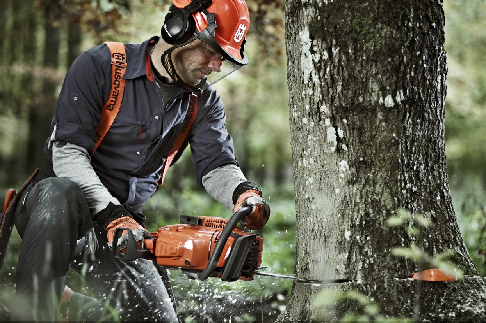
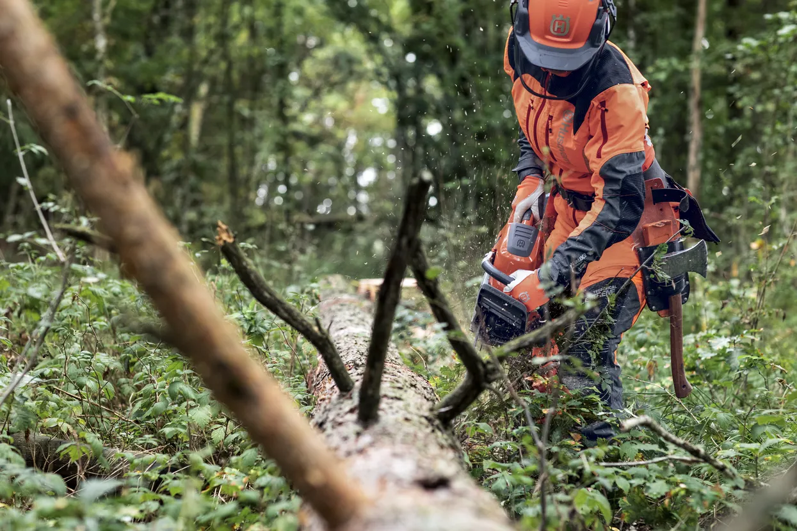
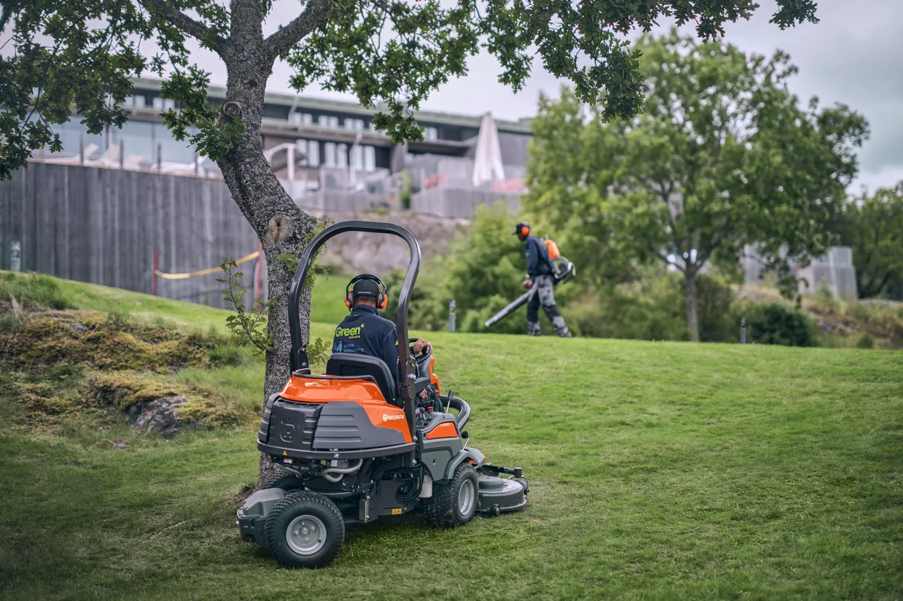

Profesjonalny serwis pilarek spalinowych i elektrycznych wszystkich marek.
Profesjonalny serwis kosiarek, kompleksowa obsługa, wymiana oleju, pasków napędowych, ostrzenie i regulacja noży, przeglądy sezonowe.
Profesjonalny serwis traktorków ogrodowych, naprawa układu jezdnego, ostrzenie i regulacja noży, przeglądy sezonowe.
Profesjonalny serwis glebogryzarek, regeneracja napędu, silnika oraz układu roboczego glebogryzarek.
Profesjonalny serwis wykaszarek, obsługa i naprawy wykaszarek spalinowych oraz elektrycznych, wymiana głowic tnących.
Profesjonalne czyszczenie ultradźwiękowe i precyzyjna regulacja gaźników.
Precyzyjne ostrzenie łańcuchów do pilarek spalinowych i elektrycznych.
Profesjonalne ostrzenie noży oraz wyważanie dla najlepszej efektywności koszenia.
Komputerowa diagnostyka urządzeń wyposażonych w systemy Autotune.
Usuwanie skrzywień wału napędowego kosiarek oraz wymiana w przypadku uszkodzeń.